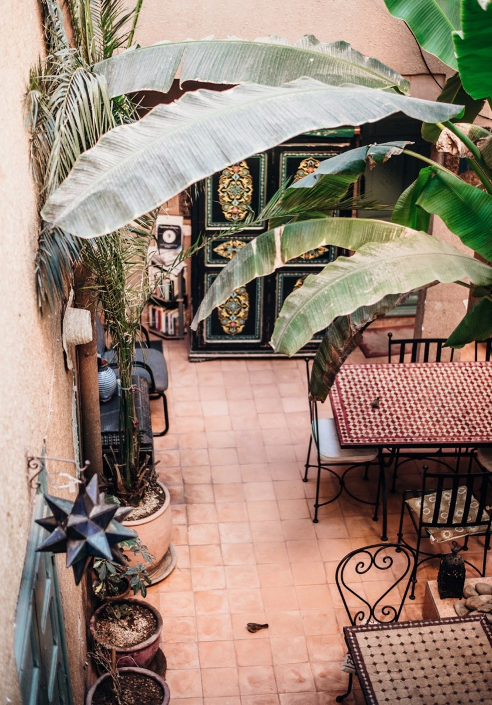
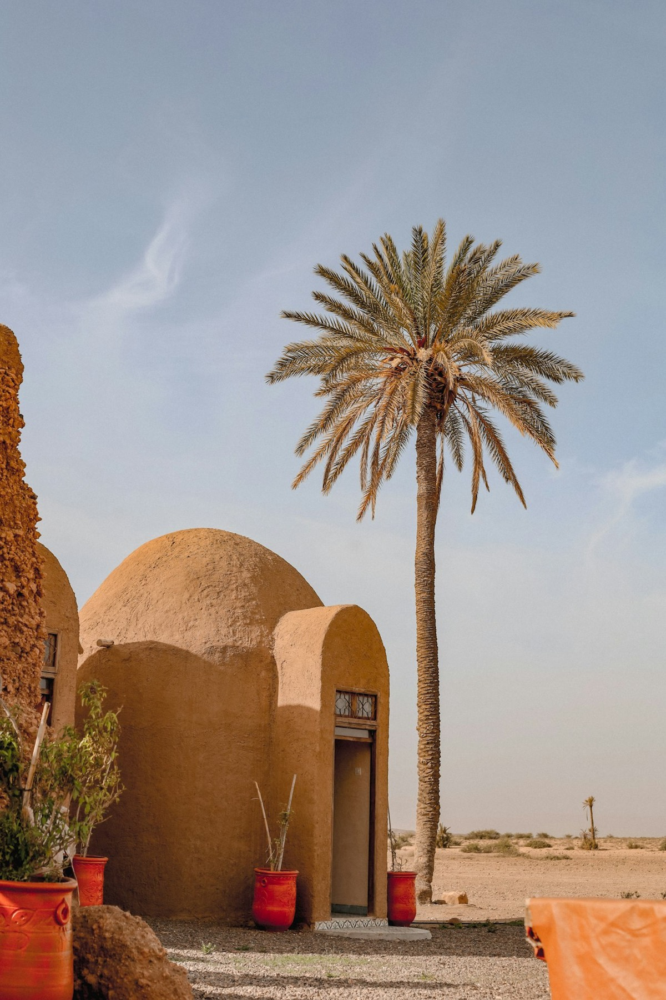
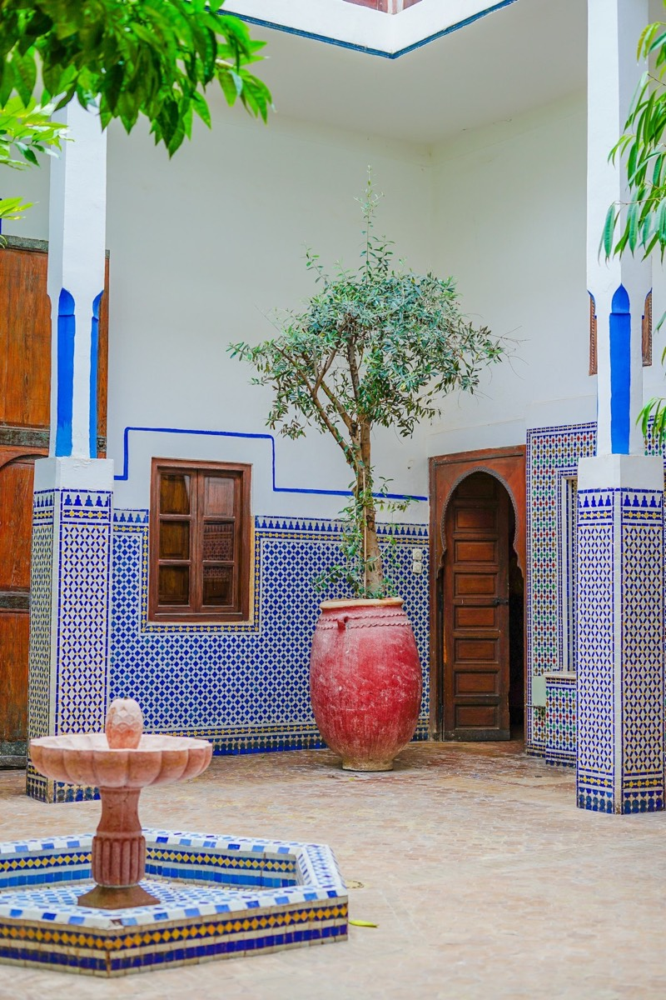
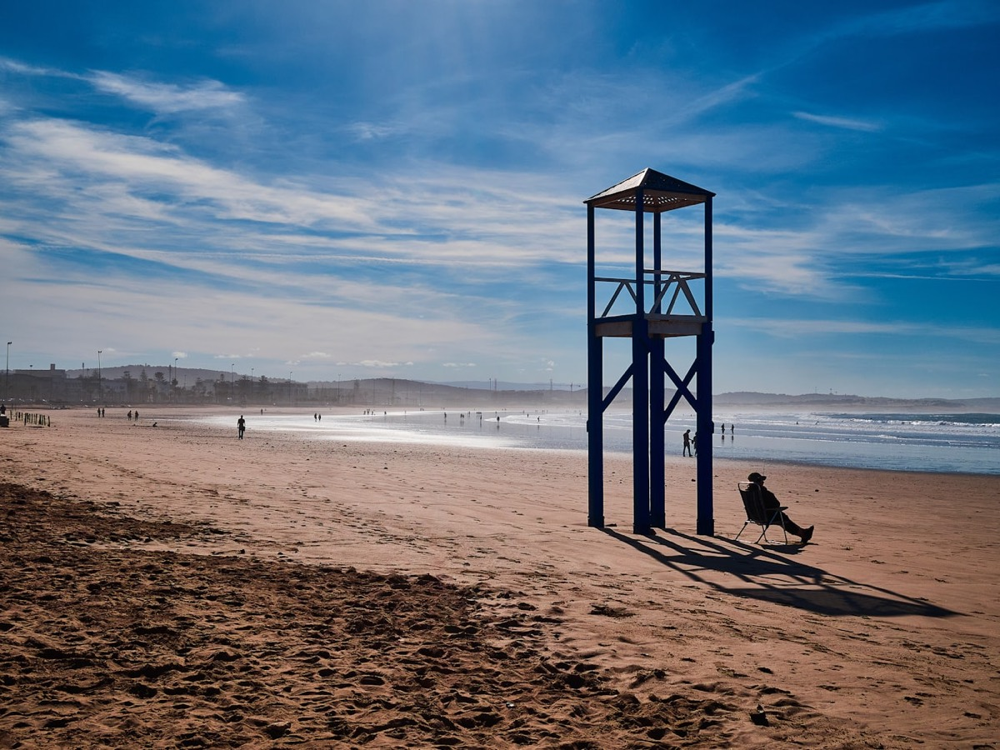
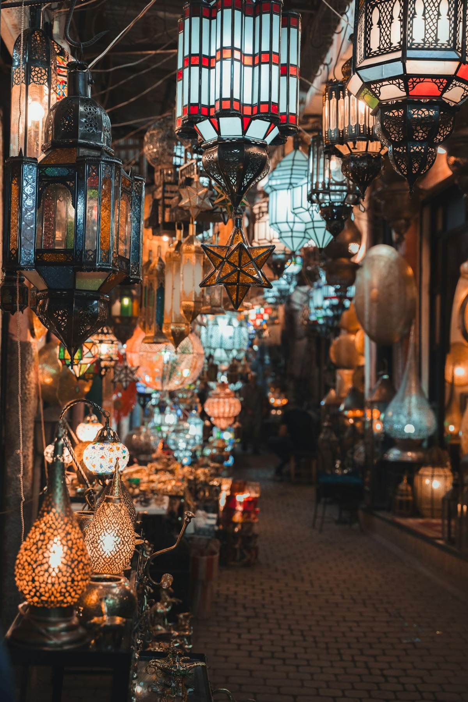

Marrakech, la ville qui dit oui

Marrakech, c'est la capitale incontestée de l'événementiel marocain — et l'une des plus excitantes du bassin méditerranéen. Une infrastructure hôtelière de classe mondiale, un aéroport international à vingt minutes du centre, des palaces, des riads, des palais, et une énergie qui ne retombe jamais. Tout ce qu'il faut pour accueillir aussi bien un comité de direction de 20 personnes qu'une convention de 500.
Ce qu'on aime ici, c'est la densité d'expériences sur un mouchoir de poche. Le matin, plénier dans un palace au pied de l'Atlas. L'après-midi, atelier d'artisans dans la médina ou parcours en side-car dans la palmeraie. Le soir, dîner sous les étoiles. À Marrakech, on ne « remplit pas un programme » : on enchaîne les sommets. Et la ville, elle, dit toujours oui.
Un dîner dans le désert d'Agafay

Si vous ne deviez retenir qu'une seule chose de cet article, ce serait celle-ci : le désert d'Agafay. À moins d'une heure de Marrakech, un océan de collines minérales où l'on monte des campements de luxe le temps d'une soirée. Tapis, tables basses, feux, musiciens gnawa, ciel étoilé sans aucune pollution lumineuse. C'est, sans exagérer, l'un des décors de dîner les plus spectaculaires de la planète.
L'effet sur un groupe est immédiat : les téléphones sortent, les barrières tombent, et la marque devient pour toujours associée à ce moment-là. Pas besoin de feux d'artifice ni de tête d'affiche — le lieu fait 90 % du travail. Le reste, c'est de la production : acheminer l'eau, l'électricité, le froid, le confort et la sécurité au milieu de nulle part. Exactement le genre de défi qu'on adore relever.
Riads & palais : le luxe qui a une âme

Le riad, c'est le secret le mieux gardé du Maroc événementiel. Derrière une porte anonyme de la médina se cache un palais : patios à ciel ouvert, zelliges, fontaines, jardins d'orangers, terrasses sur les toits. Privatisez-en un, et vous offrez à vos invités une bulle hors du temps, à mille lieues des salles de séminaire interchangeables.
Pour les formats plus ambitieux, les palais de réception de la Palmeraie accueillent plusieurs centaines de convives sans jamais perdre cette âme. Le luxe marocain n'est pas une affaire de marbre froid : c'est une question de chaleur, de détails faits main, d'hospitalité sincère. Vos invités ne se sentent pas « gérés ». Ils se sentent reçus. La nuance fait toute la différence.
Essaouira, le grand bol d'air

À deux heures et demie de route de Marrakech, Essaouira offre l'envers du décor : l'océan, les remparts, l'alizé, une médina bohème classée à l'UNESCO. C'est la destination idéale quand le brief demande de la respiration — un séminaire qui mêle travail et grand air, ou un incentive qui récompense vraiment.
Sports de glisse, balades à cheval sur la plage, ateliers culinaires, soirées les pieds dans le sable : Essaouira a ce supplément d'âme décontracté qui désamorce les hiérarchies et soude les équipes. On y produit des formats plus intimes, plus libres, où l'on troque le costume contre le lin. Et où, souvent, les meilleures idées de l'année finissent par éclore face au coucher de soleil atlantique.
La DMC : votre arme secrète au Maroc

Voilà le vrai sujet. Le Maroc est une destination magique — à condition de la maîtriser de l'intérieur. Autorisations, prestataires fiables, codes culturels, négociation, logistique en terrain inconnu : produire au Maroc « depuis Paris » est le meilleur moyen de transformer un rêve en cauchemar. C'est précisément là qu'intervient la DMC (Destination Management Company).
Une DMC, c'est un réseau tissé sur place, année après année. Les bons riads, les bons traiteurs, les bons guides, les bons interlocuteurs administratifs — et la connaissance fine de ce qui se fait, de ce qui ne se fait pas, et de ce qui fait mouche. Avec un partenaire local, vous n'achetez pas seulement des prestations : vous achetez de la tranquillité d'esprit.
Et c'est exactement notre proposition. Dare-Dare opère comme DMC au Maroc — Casablanca, Marrakech, Rabat, Tanger, Fès, Essaouira — avec des équipes sur place et une production tenue au même niveau d'exigence qu'à Paris. Pas trois agences à coordonner, pas de déperdition entre la vision et le terrain : un seul interlocuteur, du premier brief au dernier départ. Parce qu'au Maroc comme ailleurs, on ne sous-traite pas. On opère.